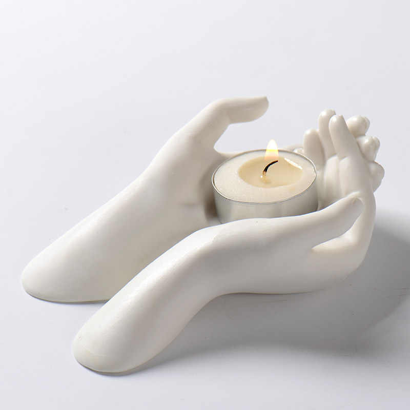
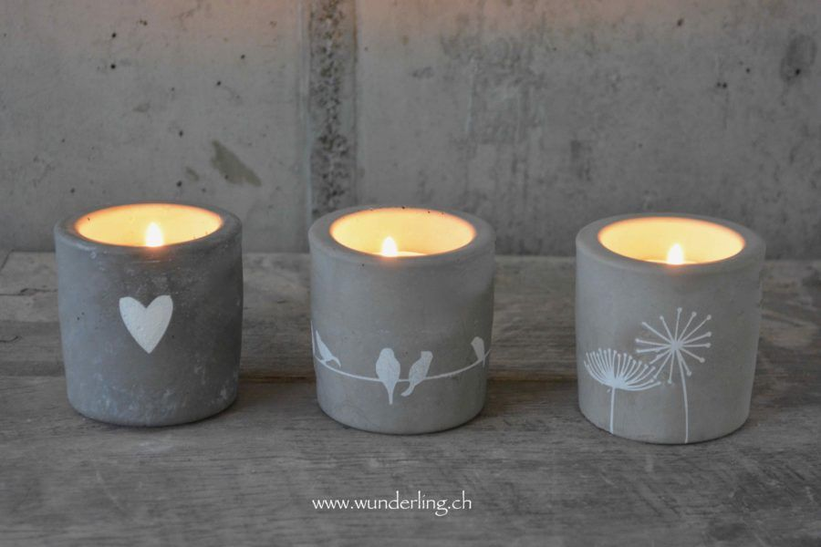

Арома-свечи и акссесуары для них.
Еще лет десять назад казалось абсурдным самим делать свечи в домашних условиях. Этими товарами завалены полки хозяйственных магазинов. Однако с недавних пор этот вид рукоделия стал набирать популярность. Процесс изготовления свечей может освоить даже ребенок, тем более что все необходимые ингредиенты можно купить в нашем интернет-магазине.
Конечно, при изготовлении таких изделий, отдавать предпочтение стоит только качественным материалам и инструментам. На нашем сайте представлен ассортимент лучших мировых марок товаров для изготовления свечей.
Детям и начинающим мастерам мы рекомендуем приступать к изучению этого вида рукоделия с создания самых простых изделий, продажа которых идет готовыми наборами. В них вы найдете все необходимые для работы компоненты и инструкцию. Со временем, освоив технику, вы сможете сами подбирать ингредиенты, материалы и составлять собственные ароматические композиции.
Свечи ручной работы не только выглядят красиво, но и абсолютно безопасны, поскольку изготавливаются из натуральных веществ.
Про свечи
Дизайнеры назвали причин, по которым в доме должны быть ароматические свечи
Знатоки утверждают, что ароматические свечи - необходимый атрибут для создания уюта в дома. Они способны украсить жизнь так же, как красивая одежда, вкусная еда и отличный отдых. Этот незамысловатый, казалось бы, предмет способен поднять жизненный тонус после рабочего дня или наоборот подарить вечерний релакс. Главное - правильно выбрать аромат, и он обязательно вызовет положительные эмоции. И не экономить на качестве, отдавая предпочтение известным брендам, таким как Yankee Candle
Аромат корицы и мяты для генерирования идей.
Нужна помощь во время мозгового штурма? Выберите свечу с ароматом корицы или мяты. Согласно многим исследованиям, эти запахи дают мозгу импульсы для повышения концентрации внимания и памяти.Аромат апельсина и лимона для комфортного пробуждения.
У вас впереди много работы? Запах апельсина или лимона сможет вам помочь. Зажгите свечу примерно на 15-30 минут и позвольте аромату побудить вас к действию.Аромат жасмина, чтобы успокоить нервы.
Если в ваших руках репутация вашей компании или важные деловые интересы, вы должны преуспеть. В этом случае используйте натуральное успокоительное средство - жасмин, чтобы помочь себе в этом начинании. Его расслабляющий аромат не только успокоит вас, но и повысит уверенность в себе и оптимизм.Аромат розмарина - запах понедельника.
Понедельник достаточно тяжелый, когда ты встаешь утром после выходных. Впереди целый день работы, поэтому убедитесь, что вы можете все сделать, вдыхая запах розмарина. Он уменьшит головную боль и поможет вам оставаться сосредоточенным.Польза ароматических свечей.
Исследования показали, что владельцы магазинов или офисов используют простые ароматы для привлечения покупателей, поддержания хорошего настроения и для увеличения продаж. В дополнение к аромату, который наполняет комнату, свечи придают романтическую обстановку. Ароматические свечи могут помочь вам добиться успеха в самых разных ситуациях - все зависит от выбранного вами аромата.
И о качестве
Покупая ароматические свечи, не стоит гнаться за дешёвым продуктом. Такие свечи, как правило, производятся в Китае. Их отличает странный запах, а ещё при горении они выделяют в воздух вредные вещества. Качественные ароматические свечи всегда имеют гладкую поверхность, это значит что в их составе минеральный воск. Подставка для свечи должна быть металлическая или стеклянная, пластик при нагревании будет выделять неприятный запах. У качественной свечи фитиль изготавливается из хлопка и располагается всегда ровно в центре свечи. Если соблюдать все эти правила выбора, то получишь качественный продукт, который станет украшением интерьера и эффективным аромасредством на все случаи жизни.
Галерея
 
О нас
Здравствуйте, вы зашли на территорию комфорта, уюта и ощущений. Мы - одни из первых в России, кто создал специализированный интернет-магазин качественных натуральных ароматов для дома и изысканных подсвешников из гипса. У нас вы, наверняка, сможете найти то, что вам нужно, и мы будем рады помочь вам в этом. Ведь в нашем магазине представлено более сотни ароматов на самый притязательный вкус.
Наш интернет-магазин был основан в 2022 году. За сравнительно недолгую историю мы накопили огромный опыт, и сегодня с уверенностью можем сказать: мы знаем, что нужно нашим клиентам. Команда профессионалов постоянно работает, чтобы выбрать для вас только лучшее, в итоге мы подобрали огромную коллекцию ароматов на все случаи жизни для любых помещений. Наша цель – помочь вам создать и комфорт, и уют в вашем доме. Мы верим, что уют кроется в мелочах, которые вы сможете найти в нашем магазине.
Вся продукция основных брендов – это ароматические диффузоры, аромасвечи ручной работы, спреи для дома и белья, ароматические карточки и саше, ароматы для автомобилей, столовые и декоративные свечи. В каждый продукт вложено тепло человеческих рук. Только благодаря искусным мастерам на свет появляются такие шедевры.
Уверены, вам понравится, заходите!
Оптовые поставки
Мы продаем ароматы для дома оптом. Если вы заинтересованы в оптовых закупках, то вы можете отправить нам запрос на получение прайс листа на электронную почту. Мы можем предложить целый комплекс услуг и высокий уровень сервиса всем нашим клиентам независимо от объема заказа.
Контакты
| Название: | "Иван и Сова" |
| Адрес: | Краснодарский край |
| Время работы: | Пн-Пт (10:00 - 19:00) |
| Телефон: | 8(988)314-88-58 | e-mail: | smaglyuk.alex@mail.ru |